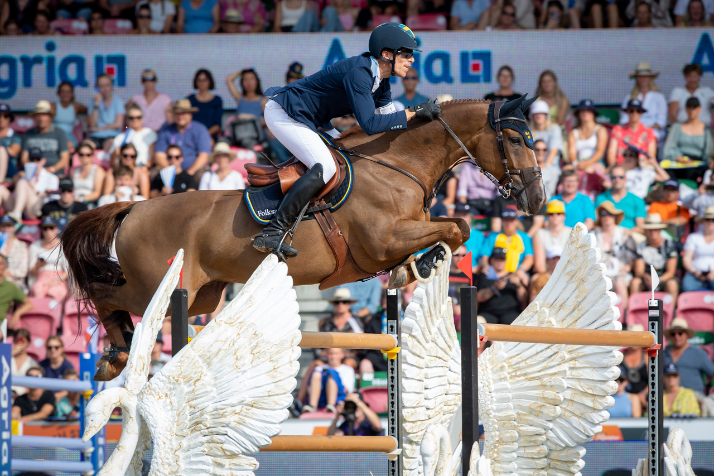

Skoki przez Przeszkody
Konkursy czasowe polegają na jak najszybszym pokonaniu parkuru z jak najmniejszą ilością zrzutek. Każda zrzutka oznacza 4 punkty karne, a każde wyłamanie 8 punktów karnych. Zdarzają się konkursy strikte ścigane, w których wyłamania nie są punktowane, a zrzutki są przeliczane na karne sekundy. Zawody na czas są najbardziej emocjonujące i najpopularniejsze, ale jednocześnie najbardziej niebezpieczne. Najwięcej wypadków jest właśnie na nich, zwłaszcza kiedy przeszkody mają wysokość 130-120 cm i więcej a nagroda jest przezwoita, wiele jeźdźców nie zwraca uwagi co jest bezpieczne i pod wpływem adrenaliny przestaje liczyć kroki w efekcie urywające co chwila fule i nie zwracając uwagi czy tempo, którym jadą jest adekwatne do wysokości przeszkód, które skaczą. |
 |